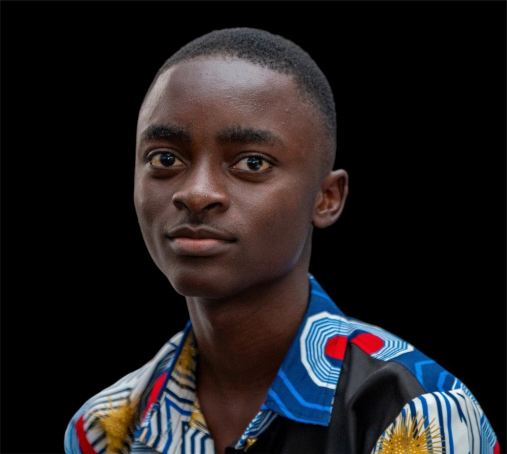

About Me

Computer Engineering - KNUST
I am a motivated Computer Engineering student at KNUST with a strong interest in technology, innovation, and community development. I apply engineering solutions to address real-world challenges, and have delivered practical projects combining software and embedded systems.
Education
- BSc. Computer Engineering — Kwame Nkrumah University of Science and Technology (KNUST), Expected Sep 2027
- WASSCE (Science) — Opoku Ware School, Santasi, Kumasi (Mar 2021 – Sep 2023)
Leadership
Assistant General Secretary - Opoku Ware School (Feb 2025 - Present)
Achievements & Certifications
- Participant, UITS Software Development Bootcamp — KNUST (Oct 2024)
- Participant, Technology Week Celebration (TWEEK '24) — Dept. of Computer Engineering, KNUST
- Certified in SQL (Basic) — HackerRank (2025)
- Microsoft 365 Ecosystem Certification — Coursera (2025)
- Complete Ethical Hacking Course — Udemy (2025)
- Best Student — Year 1 & Year 2 (Atimatim D/A Experimental JHS)